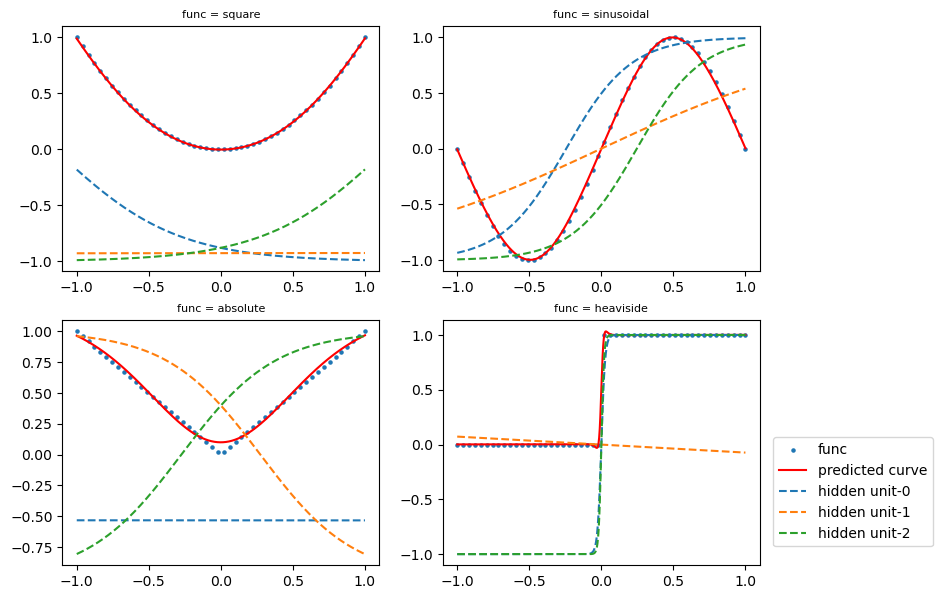
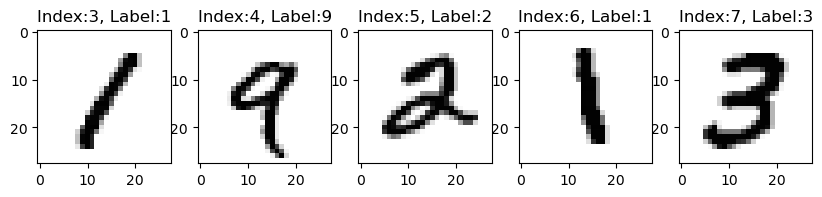
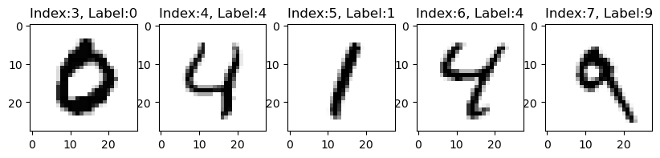
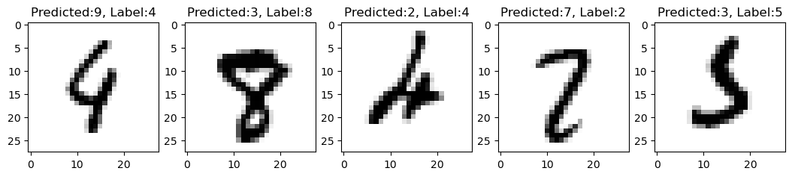
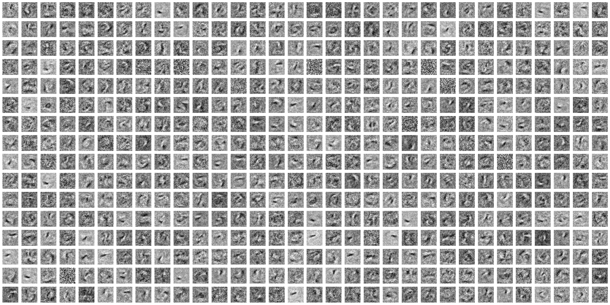
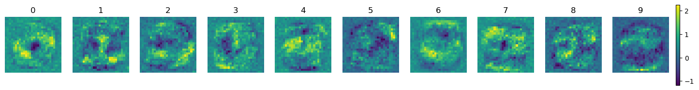

Neural Networks
Introduction
Introduction to Artificial Intelligence Artificial intelligence (AI) has captured widespread attention, frequently discussed in various media beyond just technical outlets. The journey of AI began in the 1950s with computer scientists exploring the potential for computers to think.
AI aims to automate tasks traditionally performed by humans, encompassing several approaches including both learning and non-learning methods.
Early AI and Symbolic AI Initially, AI was dominated by Symbolic AI up until the late 1980s. This approach involved programmers creating explicit sets of rules to manipulate knowledge. However, Symbolic AI struggled with complex problems due to its inflexibility and limited scope, leading to the exploration of alternative methods.
\begin{align*} \left. \begin{aligned} \text{Rules} \longrightarrow \\ \text{Data} \longrightarrow \end{aligned} \right| &\text{Classical programming} \longrightarrow \text{Answer} \\ \\ \left. \begin{aligned} \text{Data} \longrightarrow \\ \text{Answer} \longrightarrow \end{aligned} \right| &\text{Machine learning} \longrightarrow \text{Rules} \end{align*}
Rise of Machine Learning As the limitations of Symbolic AI became apparent, machine learning emerged as a new paradigm. Unlike traditional programming, which relies on hard-coded rules, machine learning enables computers to learn from data. This shift allows systems to develop their own rules by finding patterns in data, which is more effective for tasks with complex or less defined rules. The success of machine learning has been propelled by advances in computing power and the availability of large datasets.
Introduction and Explanation of Deep Learning Within machine learning, deep learning represents a further specialization, characterized by models that process data through many layers (hence deep
) of neural networks. These layers construct increasingly abstract representations of data, which are not explicitly programmed but learned from vast amounts of training data. Deep learning excels at identifying intricate structures in high-dimensional data, making it a powerful tool for many AI applications.
Educational Approach Our educational approach focuses on building intuitive understanding of these concepts without delving too deeply into technical complexities. This strategy is designed to help learners grasp the fundamental principles of deep learning and apply them to real-world problems effectively.
Fundamentals of Neural Networks
Let’s begin by exploring a simple feedforward neural network with three layers: an input layer, a hidden layer (with two nodes or neurons), and an output layer, detailed in the Excel file. The Excel model demonstrates how even a straightforward neural network, like this one, can exhibit nonlinear behavior based on the input value changes. This characteristic is fundamental to understanding how neural networks can model complex functions despite their seemingly simple structures.
The network’s structure is illustrated in Figure 1 below.

The tabset below provides detailed explanations of the neural network’s layers.
It consists of a single node represented as input x
, which represents the input data for the network.
- Two neurons comprise this layer. The input node connects to these neurons with weights
w11andw12. These weights determine the input’s influence on the hidden neurons. - Each neuron in the hidden layer includes a bias term (
b11andb12), which is added to the weighted input before applying the activation function. - The neurons utilize a logistic activation function, symbolized by
L, to introduce non-linearity. The outcomes of this layer arez1 = L(w11*x + b11)andz2 = L(w12*x + b12).
- The outputs
z1andz2from the hidden layer feed into the output node, with weightsw10andw20. - An additional bias
bis incorporated before the logistic function is applied to generate the final outputy = L(w10*z1 + w20*z2 + b).
The network’s final output y is the culmination of processing the input x through the layers, with each neuron outputting the logistic function’s result when applied to the sum of its weighted inputs and bias. This structure allows the neural network to approximate non-linear functions and make predictions or classifications based on the input x.
Tensor: where it starts
Tensors serve as the foundational data structures for neural networks, where they are better known as multidimensional arrays. The essence of a tensor is characterized by its dimensionality, which directly corresponds to the number of indices required to pinpoint a specific scalar value within its structure. In simpler terms, tensors can be visualized across several dimensions:

- Scalars, which are zero-dimensional tensors, represent singular values without any axes.
- Vectors represent one-dimensional tensors, akin to a straight line of elements, each identifiable by a single index.
- Matrices take the form of two-dimensional tensors, arrayed in rows and columns, requiring two indices for location identification.
To contextualize the utility of tensors in real-world applications, consider the following examples:
- Vector data in machine learning often appears as 2D tensors with a shape denoted by (samples, features), where each sample is a vector of features.
- Timeseries or sequence data are typically represented as 3D tensors shaped (samples, timesteps, features), useful in applications like stock price predictions or speech recognition where the sequence of data points is crucial.
- Image processing uses 4D tensors to store data, commonly shaped (samples, height, width, channels) or (samples, channels, height, width), depending on the format preferred, which effectively captures the spatial hierarchy and coloring of multiple images in a batch.
- Video data extends this concept into 5D tensors, either shaped (samples, frames, height, width, channels) or (samples, frames, channels, height, width), accommodating multiple frames per sample to analyze movements and changes over time.
Through these structures, tensors allow neural networks to interpret and process a wide range of complex data types systematically and efficiently, making them indispensable in the field of deep learning.
Layers: the building blocks of deep learning
A layer in a neural network comprises numerous neurons or nodes, each designed to identify and learn specific features from the input data. These layers sequentially process input tensors, transforming them into output tensors that reflect increasingly abstract representations of the data, as shown in the figure.

The efficacy of each layer hinges on its weights—denoted as w_i in our simplified Excel model. These weights are pivotal as they adjust the influence of input features on the output during the learning process. Through training, the network fine-tunes these weights to minimize errors and enhance performance, enabling the neural network to derive meaningful patterns and insights from complex data.
Ultimately, each neural network layer acts as a sophisticated data-processing module, essential for extracting features that inform the network’s final output, which is used to make predictions or classifications.
Activation functions: beyond the linearity
Many operations in the neural networks is expressed as a linear transformation—scaling and offset—followed by an activation function, e.g., z1 = L(w11*x + b11) in the Excel model, where L is a logistic activation function

The linear transformation is typically conducted as matrix multiplication, providing the groundwork for more complex operations.
Activation functions are critical and may sound complex; however, the current go-to function is the ReLU, or rectified linear unit. Despite its intimidating name, ReLU is simply \max(0,x), outputting zero for negative inputs and the input value itself for non-negative inputs. The accompanying graphs depict common activation functions and demonstrate how they modify input values into outputs.

Another very important activation function softmax, which is slightly more complex mathematically. It outputs a set of values ranging between 0 and 1, summing to 1 (probabilities!). Think of the softmax function like a talent show judge who must decide which performer stands out the most. It looks at all the scores (or values) and boosts the highest one so it’s clear who the winner is. In a neural network that’s trying to categorize things, the softmax function helps pick the most likely category the network believes the input belongs to.
Without activation functions, a neural network would be nothing more than a linear regression model, unable to capture the nonlinearity inherent in complex data relationships. Effective activation functions share a common trait:
- They possess at least one responsive range, wherein significant changes to the input yield substantial changes in the output—crucial for the network’s learning phase.
- Many also have a less responsive or saturated range, where input variations have minimal impact on the output.
Loss function and optimizer: less is what we want
A loss function (or cost function) is a function that computes a single numerical value that the learning process will attempt to minimize. A loss function is like a scoreboard for our neural network game. It keeps track of the score to help the network get better at making predictions. It does this by looking at what the network predicts and comparing it to the correct answers, seeing how far off it is.
The optimizer determines how the network will be updated based on the loss function. It implements a specific variant of stochastic gradient descent (SGD). An optimizer is like a coach. It uses the score from the loss function to guide the network on how to change its strategy (or update its weights) to play the game better next time, aiming to get a higher score by making more accurate predictions.
Models: networks of layers
A deep learning model is like a complex web made up of many layers. Each layer has a bunch of tiny processing units called nodes or neurons. In a certain type of network called a feedforward neural network (FNN), information travels in just one direction, forward, from the input layer, through the hidden layers, to the output layer. FNNs are great for sorting things into categories (classification) and making predictions (regression).
On the other hand, a recurrent neural network (RNN) works differently. It has special loops in its connections that let it remember past information. This memory helps RNNs handle data that follows a sequence, like sentences in a conversation, music notes in a song, or stock prices over time. Because of this memory, RNNs can understand the sequence and context, which is really useful for making predictions in tasks like language translation or stock price forecasting.
In essence, the way a deep learning model is built - whether it’s an FNN or an RNN - matters a lot because it decides what the model can do best.
Anatomy of a neural network
We examine a simple neural network featuring 3 hidden layers. This network is trained using various scattered input points derived from a set of functions, such as x^2, \sin(x), \text{abs}(x) and \text{heaviside}(x), which are displayed on the left side of the figure below. The network’s output, which consists of the predicted functions based on the learning, is depicted on the right side of the figure. The central part of the figure illustrates the neural network’s architecture.

Figure 7 displays the features captured by the hidden layers. Essentially, the neural network learns from the blue dots (denoted as func
in the figure legend) and infers that the final curve (represented by the red solid line, or the predicted curve
) is a weighted sum of three dashed curves generated by the hidden layers. It is observed that the predicted curve aligns closely with the true function, indicating that the neural network effectively learns from the scattered input points.
Exploring Neural Network
In this section, we explore neural networks using the MNIST dataset. Our objective is to build a simple Feedforward Neural Network (FNN) that can recognize digits from images. The MNIST dataset is a widely-used benchmark for image classification tasks. It comprises 60,000 training images and 10,000 test images of handwritten digits ranging from 0 to 9. Each image is in grayscale and has a resolution of 28x28 pixels.
Code
import matplotlib.pyplot as plt
from tensorflow.keras.datasets import mnist
(train_images, train_labels), (test_images, test_labels) = mnist.load_data()
print('training images:{}, test images:{}'.format(train_images.shape, test_images.shape))
def showimg(data):
idx = 3
span = 5
if data=='train':
images = train_images
labels = train_labels
if data=='test':
images = test_images
labels = test_labels
plt.figure(figsize=(10,2))
for i in range(5):
plt.subplot(1, 5, i + 1)
digit = images[idx+i]
plt.imshow(digit, cmap=plt.cm.binary)
plt.title('Index:{}, Label:{}'.format(idx+i, labels[idx+i]), fontsize = 12)
plt.show()
showimg('train')
showimg('test')training images:(60000, 28, 28), test images:(10000, 28, 28)

The first row displays five images from the training dataset, while the second row features five images from the testing dataset. Each image is marked with an index that shows its position within the respective training or testing set, along with a label indicating the digit the image represents. Our objective is to learn how these labels correspond to the images using the training set and then use this understanding to accurately predict the labels for each image in the testing set.
To facilitate a clear demonstration, we have chosen to use Python package Keras for constructing our neural network. Keras is renowned for its simple and intuitive coding structure, making it an ideal choice for this task. Our aim is to classify each image into one of ten categories, numbered 0 through 9.
Data Preparation
To feed our neural network the right kind of data, we need to reshape it first:

In the MNIST dataset, each image is a grid of 28x28 pixels, and each pixel appears as a tiny square in the figure. These pixels contain numbers between 0 and 255 that represent how light or dark each pixel is. To prepare the images for our neural network, we turn this grid into a single long list, or vector, with 784 numbers (because 28 multiplied by 28 gives us 784). We also adjust these numbers to be between 0 and 1 by dividing them by 255, which helps the network process the images more effectively.
For the labels, which are the actual numbers that the images represent, we have a list with either 60,000 entries for the training set or 10,000 for the testing set. These numbers vary from 0 to 9. We use a so-called one-hot encoding to turn each number into a ten-element list, where only one element is 1
(indicating the digit), and the rest are 0’s. So, the number ’2
becomes [0, 0, 1, 0, …, 0], a vector of size 10.
So, for our training set of 60,000 images and the testing set of 10,000 images, we end up with two big lists. The training list is 60,000 rows long and 784 columns wide, and the testing list is 10,000 rows by 784 columns. We do the same for our labels, creating lists that are 60,000x10 for training and 10,000x10 for testing, where each row has one 1
and nine ’0’s to show what digit the image is.
The data preparation steps are carried out using the following Python code:
train_images_reshape = train_images.reshape((60000, 28 * 28))
train_images_reshape = train_images_reshape.astype('float32') / 255
test_images_reshape = test_images.reshape((10000, 28 * 28))
test_images_reshape = test_images_reshape.astype('float32') / 255
train_labels_cat = to_categorical(train_labels)
test_labels_cat = to_categorical(test_labels)Network Architecture
At the heart of neural networks is the layer—a data-processing module that functions as a filter for information. Essentially, a layer takes in data and helps to extract and refine features from it, which are representations of the data in a form that is more meaningful for the task at hand.
Deep learning involves stringing together these layers to progressively distill and refine data. You can think of a deep learning model as a sophisticated sieve, where each layer acts as a filter that focuses on increasingly detailed aspects of the data.
The Python code below constructs such a model using Keras:
network = models.Sequential()
network.add(layers.Dense(512, activation='relu', input_shape=(28 * 28,)))
network.add(layers.Dense(10, activation='softmax'))In this code:
- We start by initializing a new sequential network.
- Next, we add a densely connected layer of 512 neurons that uses the ReLU (rectified linear unit) activation function. The input_shape=(28 * 28,) indicates that each input will be a flattened array of 28 by 28 pixels.
- Finally, we add a 10-neuron dense layer, which uses the softmax activation function. This layer will output a probability distribution over 10 classes, corresponding to the 10 possible digits in the MNIST dataset.
Anatomy of Neural Network for Digit Classification
This figure provides a high level visualization to outline the process of a simple neural network learning to classify handwritten digits from the MNIST dataset.

Input Image: The journey begins with a 28x28 pixel representation of a handwritten digit from the MNIST dataset.
Layer 1 Input: Each digit image is unrolled into a 784-element vector (since 28 multiplied by 28 equals 784) to serve as the input for the neural network.
Layer 1 Weight: In the first dense layer, we have 512 neurons, each connected to every input pixel, resulting in 784 weights per neuron. These weights are akin to the importance the neuron assigns to each pixel when trying to learn the patterns in the images. Intriguingly, each neuron’s set of 784 weights can be reshaped back into a 28x28 matrix and visualized similarly to the original digit images, representing the specific features that neuron is detecting. This layer transforms the input by applying a weighted sum of the inputs, followed by a non-linear activation function (ReLU - Rectified Linear Unit).
Layer 1 Output & Layer 2 Input: The processed data, known as filter scores, are passed from the first dense layer to the second layer. This transformation is the neural network’s first attempt at understanding the input digit.
Layer 2 Weight: The second layer, composed of 10 neurons, aligns with the 10 possible digit classes, ranging from 0 to 9. Every neuron in this layer has 512 weights, which it uses to transform the 512-dimensional filter scores from the previous layer into a single score that represents the likelihood of the input image matching a particular digit class.
Layer 2 Output: This layer outputs 10 scores, each indicating the likelihood that the input image matches one of the digit classes.
Softmax Activation: Finally, the softmax activation function converts these scores into a probability distribution, ensuring that the probabilities sum to 1, allowing us to select the digit class with the highest probability as our prediction.
The network architecture specified in the provided code segment is visualized step by step in the figure, showing the flow from the initial input to the final output that classifies the digit.
Compilation
Before we training our neural network to recognize digits, we need to set up a few things. It’s like prepping a player before the big game. We need to:
Choose an optimizer: This is like the coach for the network. It helps the network improve step by step. In our code, we’re using
rmsprop
, which is a smart coach that adjusts the player’s (network’s) moves to perform better over time.Pick a loss function: This is how the network knows if it’s winning or losing. It’s like the scoreboard. The
categorical_crossentropy
we’ve chosen is perfect for when the answers are one choice out of many, like picking which digit is in the image.Decide on metrics: This is what we want to keep an eye on. We’ve picked
accuracy
because we want to see how often the network gets the right answer.
And here’s how we write it down in our Python playbook:
network.compile(optimizer='rmsprop', # rmsprop = Root Mean Squared Propagation
loss='categorical_crossentropy',
metrics=['accuracy'])By running this code, we tell our neural network to get ready. We’ve given it the rules of the game (loss function), a coach (optimizer), and told it to focus on getting a high score (accuracy).
Training the Network
We use the following command to train the network:
network.fit(train_images_reshape, train_labels_cat,
epochs=5, batch_size=128, verbose=1);This command initiates training, where the network iterates over the training data in mini-batches of 128 samples, completing 5 full cycles (each cycle over all the training data is called an epoch). In each epoch, the network computes the gradient of the weights (essentially the direction and amount by which the weights should be adjusted) concerning the loss function on the batch and updates the weights accordingly. After these 5 epochs, the network will have performed 5 \times ceil(60000 \div 128) gradient updates, totaling 2345 updates.
The size of the batch significantly impacts learning. A sufficiently large batch size provides a stable estimate of the gradient of the full dataset. By sampling from your dataset, you can approximate the gradient while significantly reducing computational costs.
The Model
We have compiled all the code snippets together to present the complete model as follows:
Code
import os
import numpy as np
import matplotlib.pyplot as plt
from tensorflow.keras import models, layers
from tensorflow.keras import backend as K
from tensorflow.keras.utils import to_categorical, get_file
%matplotlib inline
mdl_url = ("https://raw.githubusercontent.com/ming-zhao/ming-zhao.github.io"
"/master/AIML_for_Business/")
def build_model():
model = models.Sequential(name='mnist_simple')
model.add(layers.Input(shape=(28 * 28,)))
model.add(layers.Dense(512, activation='relu'))
model.add(layers.Dense(10, activation='softmax'))
model.compile(optimizer='rmsprop', loss='categorical_crossentropy', metrics=['acc'])
model.fit(train_images_reshape, train_labels_cat, epochs=5, batch_size=128, verbose=1);
model.save('./model/mnist_simple.keras')
return model
from keras.datasets import mnist
(train_images, train_labels), (test_images, test_labels) = mnist.load_data()
train_images_reshape = train_images.reshape((60000, 28 * 28))
train_images_reshape = train_images_reshape.astype('float32') / 255
test_images_reshape = test_images.reshape((10000, 28 * 28))
test_images_reshape = test_images_reshape.astype('float32') / 255
train_labels_cat = to_categorical(train_labels)
test_labels_cat = to_categorical(test_labels)
model = build_model()
# model = models.load_model(get_file(origin=os.path.join(mdl_url, 'mnist_simple.keras')));
model.summary()
test_loss, test_acc = model.evaluate(test_images_reshape, test_labels_cat, verbose=0)
predicted = np.argmax(model.predict(test_images_reshape, verbose=0), axis=-1)
result = abs(predicted - test_labels)
misclassified = np.where(result>0)[0]
print('Test accuracy is {}%'.format(round(test_acc*100,2)))
print('Out of 10000 testing images, {} misclassified images.\n'.format(misclassified.shape[0]))Epoch 1/5
469/469 ━━━━━━━━━━━━━━━━━━━━ 2s 3ms/step - acc: 0.8710 - loss: 0.4424
Epoch 2/5
469/469 ━━━━━━━━━━━━━━━━━━━━ 2s 3ms/step - acc: 0.9654 - loss: 0.1209
Epoch 3/5
469/469 ━━━━━━━━━━━━━━━━━━━━ 1s 3ms/step - acc: 0.9795 - loss: 0.0712
Epoch 4/5
469/469 ━━━━━━━━━━━━━━━━━━━━ 1s 3ms/step - acc: 0.9855 - loss: 0.0491
Epoch 5/5
469/469 ━━━━━━━━━━━━━━━━━━━━ 2s 3ms/step - acc: 0.9896 - loss: 0.0371
Test accuracy is 98.07%
Out of 10000 testing images, 193 misclassified images.
Model: "mnist_simple"
┏━━━━━━━━━━━━━━━━━━━━━━━━━━━━━━━━━┳━━━━━━━━━━━━━━━━━━━━━━━━┳━━━━━━━━━━━━━━━┓ ┃ Layer (type) ┃ Output Shape ┃ Param # ┃ ┡━━━━━━━━━━━━━━━━━━━━━━━━━━━━━━━━━╇━━━━━━━━━━━━━━━━━━━━━━━━╇━━━━━━━━━━━━━━━┩ │ dense (Dense) │ (None, 512) │ 401,920 │ ├─────────────────────────────────┼────────────────────────┼───────────────┤ │ dense_1 (Dense) │ (None, 10) │ 5,130 │ └─────────────────────────────────┴────────────────────────┴───────────────┘
Total params: 814,102 (3.11 MB)
Trainable params: 407,050 (1.55 MB)
Non-trainable params: 0 (0.00 B)
Optimizer params: 407,052 (1.55 MB)
The output illustrates the layers of the model and the number of their parameters. It also shows the model’s accuracy on the test data. As we can see, some images are misclassified. Let’s examine those images.
Code
index = 0
# print('Examples of misclassified images {}-{}'.format(index, index+4))
plt.figure(figsize=(13,3))
for i in range(5):
plt.subplot(1, 5, i + 1)
idx = misclassified[i+index]
digit = test_images[idx]
plt.imshow(digit, cmap=plt.cm.binary)
plt.title('Predicted:{}, Label:{}'.format(predicted[idx], test_labels[idx]), fontsize = 12)
plt.show()
Figure 9 displays five misclassified images. For instance, at the top of all the 5 images, it shows predicted: X, Label: Y
for some X \neq Y — indicating that the label is Y, but our model predicted X.
Code
# Get the weights of all layers
weights = [layer.get_weights() for layer in model.layers]
# Reshape the weights into 28x28 images
weight = np.reshape(weights[0][0], (28, 28, 512))
# print('plot weights of the first layer as a heatmap')
fig, axs = plt.subplots(nrows=16, ncols=32, figsize=(32,16))
for i in range(16):
for j in range(32):
axs[i,j].imshow(weight[:,:,i*32+j], cmap='gray')
axs[i,j].axis('off')
plt.show()
Figure 10 is the heatmap of the first layer’s weights. This layer contains 512 neurons, resulting in 512 images. Recall that the code snippet below added this layer to the model:
network.add(layers.Dense(512, activation='relu', input_shape=(28 * 28,)))Each image in Figure 10 represents the specific features that a neuron is detecting. For more details, see Anatomy of Neural Network for Digit Classification: Layer 1 Weight.
Figure 11 aggregates the weights of both layers into a heatmap. While the aggregated weights plots don’t take into account activation functions and bias terms, they do provide some insight into how the neural network operates.
Consider the first image in Figure 11, which demonstrates how an image is classified as the digit 0. According to the color scale on the right, yellow or light green indicates high values, suggesting that pixels in these areas significantly contribute to classifying an image as 0. Conversely, dark colors indicate low values (or even negative), showing that pixels in these areas do not support the classification as 0. For instance, the center of the 0 image displays strongly negative values, indicating that any color in the center of the image is less likely to be classified as 0.
Code
# print('plot aggregated weights of both layers as a heatmap')
# Get aggregated weights and reshape
weight = (weights[0][0] @ weights[1][0]).reshape(28, 28, -1)
fig, axes = plt.subplots(nrows=1, ncols=10, figsize=(18,10))
for i, ax in enumerate(axes):
ax.set_title(i)
im = ax.imshow(weight[:,:,i], cmap='viridis')
ax.axis('off')
fig.colorbar(im, ax=axes, fraction=0.006, pad=0.01)
plt.show()